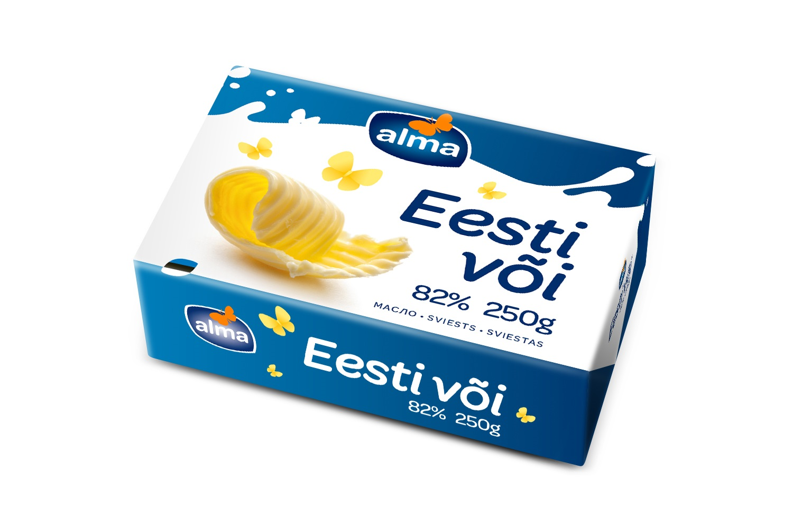
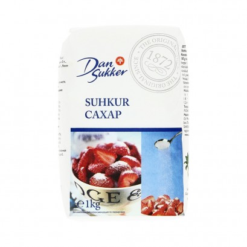

Kirjukoer - Jan-Marcus Sivadi TARpe19
Koostisosad
180 g küpsiseid
|
|
150 g marmelaadikomme
|
|
100 g kvaliteetset võid
|

|
2 sl kakaopulbrit
|

|
1 sl suhkrut
|

|
Valmistamine
1. Murenda küpsised suurde kaussi (nt pudrunuiaga tampides)
2. Sega juurde suhkur ja kakaopulber
3. Riivi jämeda riiviga juurde või
4. Lisa hakitud marmelaadikommid, sega läbi ja suru ühtlaseks (kui segu on väga kuiv, lisa veidi piima).
5. Pane toidukilega vooderdatud koogivormi või keera pikaks vorstiks kile sisse.
6. Pane vähemalt paariks tunniks külmkappi tahenema. Enne serveerimist lõika viiludeks.
Retsepti allikas
--> Retsepti allikas
Jan-Marcus Sivadi © 2020